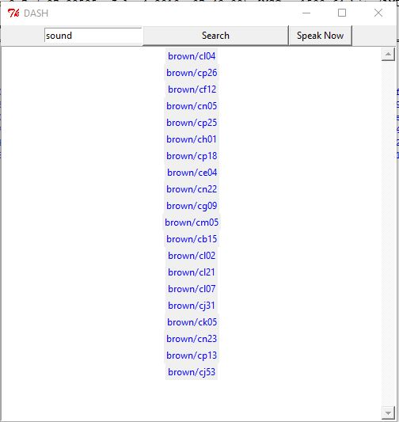
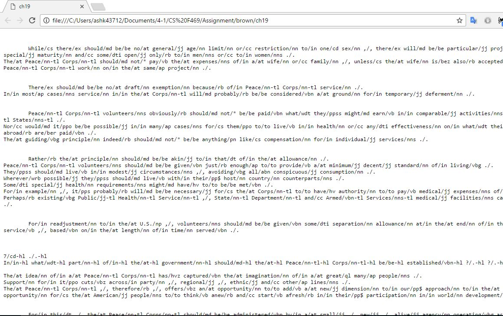

The documentation is submitted to fullfill the need of first Assignment of Information Retrieval.
We have generated a Search Engine DASH using Python as programming language and its libraries as accessories .
We were able to retrieve and rank the documents based on Vector Space Model and Ranked Retrieval. Besides, Auto-suggestions are also provided in the form of Drop-down list to help the user in his query search. Speech Recognition is also incorporated that performs a search based on audio input. At the end , the relevant documents are displayed on the basis of their rank with respect to resemblance to the searched query in the form of redirective links, which will get directed to the corresponding document in the default web browser.
DashBoard showing Search Results based on query 'sound'

stemmer = PorterStemmer()
dict = {}
d = set()
d1 = set()
for files in fileNames:
fileName = 'brown/'+files
#print files
dict[str(files)]={}
with open(fileName) as f:
content = f.read()
for word in content.split():
ind = word.find('/')
if word.find(',')==-1 and word.find("'")==-1 and word.find('(')==-1:
word = word[:ind]
word=word.lower()
d1.add(str(word))
word = stemmer.stem(word)
d.add(str(word))
#print word
if dict[files].has_key(word):
k=dict[files][word]
dict[files][word]=k+1
else:
dict[files][word]=1
print list(d1)[:200]
print len(d1)
invertedIndex = {}
for term in d:
invertedIndex[term] = []
for file in fileNames:
if dict[file].has_key(term):
invertedIndex[term].append(file)
n = len(fileNames)
tf_idf = {}
for files in fileNames:
fileName = 'brown/'+files
#print files
tf_idf[str(files)]={}
for key in dict[str(files)]:
tf_idf[files][key] = (1 + math.log(dict[files][key],10.0) ) * (math.log(n/(1.0 * len(invertedIndex[key]) ), 10.0))
class AutocompleteEntry(Entry):
def __init__(self,*args, **kwargs):
Entry.__init__(self, *args, **kwargs)
self.var = self["textvariable"]
if self.var == '':
self.var = self["textvariable"] = StringVar()
self.var.trace('w', self.changed)
self.bind("", self.selection)
self.bind("", self.up)
self.bind("", self.down)
self.lb_up = False
def changed(self, name, index, mode):
if self.var.get() == '':
self.lb.destroy()
self.lb_up = False
else:
words = self.comparison()
if words:
if not self.lb_up:
self.lb = Listbox()
self.lb.bind("", self.selection)
self.lb.bind("", self.selection)
self.lb.place(x=self.winfo_x()+self.winfo_width()-40, y=self.winfo_y()+self.winfo_height())
self.lb_up = True
self.lb.delete(0, END)
for w in words:
self.lb.insert(END,w)
else:
if self.lb_up:
self.lb.destroy()
self.lb_up = False
def selection(self, event):
if self.lb_up:
self.var.set(self.lb.get(ACTIVE))
self.lb.destroy()
self.lb_up = False
self.icursor(END)
def up(self, event):
if self.lb_up:
if self.lb.curselection() == ():
index = '0'
else:
index = self.lb.curselection()[0]
if index != '0':
self.lb.selection_clear(first=index)
index = str(int(index)-1)
self.lb.selection_set(first=index)
self.lb.activate(index)
def down(self, event):
if self.lb_up:
if self.lb.curselection() == ():
index = '0'
else:
index = self.lb.curselection()[0]
if index != END:
self.lb.selection_clear(first=index)
index = str(int(index)+1)
self.lb.selection_set(first=index)
self.lb.activate(index)
def comparison(self):
word=self.var.get()
word=word.lower()
ed=EditDist()
sugg=[]
trie.didUMean(word,sugg)
if len(sugg)!=0:
sugg.sort(key = lambda s: len(s))
else:
sugg=ed.correct(word)
if trie.search(word):
sugg.insert(0,word)
res=[chunk for chunk in sugg[:min(len(sugg),10)]]
return res
def speakNow():
r = sr.Recognizer()
with sr.Microphone() as source:
print("Say something!")
audio = r.listen(source)
try:
print("Google thinks you said " + r.recognize_google(audio))
key = r.recognize_google(audio)
entry.delete(0, END)
entry.insert(0,key)
word=key
text=pageRank(key)
content_text.delete('1.0', END)
content_text.insert('0.0',text)
except sr.UnknownValueError:
print("Google could not understand audio")
except sr.RequestError as e:
print("Could not request results from Google service; {0}".format(e))
def callback(event):
s = event.widget.cget("text")
webbrowser.get("C:/Program Files (x86)/Google/Chrome/Application/chrome.exe %s").open(s)
def showSearchResults():
key=entry.get()
word=key
text=pageRank(key)
for words in text.split('\n'):
lbl = tk.Label(root, text=r"brown/"+words, fg="blue", cursor="hand2")
lbl.pack(side=LEFT)
lbl.bind("", callback)
The corresponding Document is directed to on clicking the hyperlink displayed in search results.
